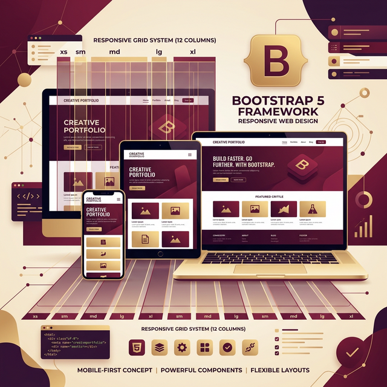
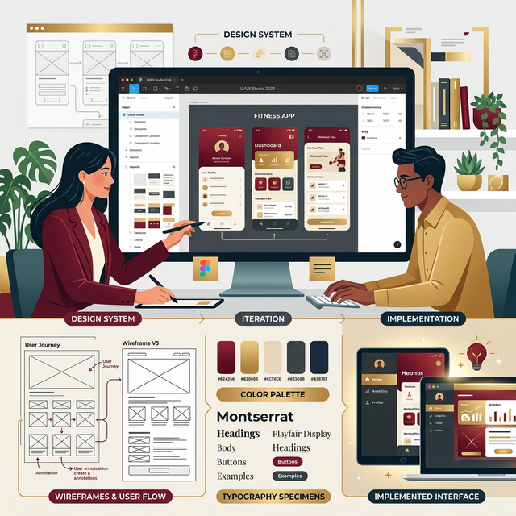
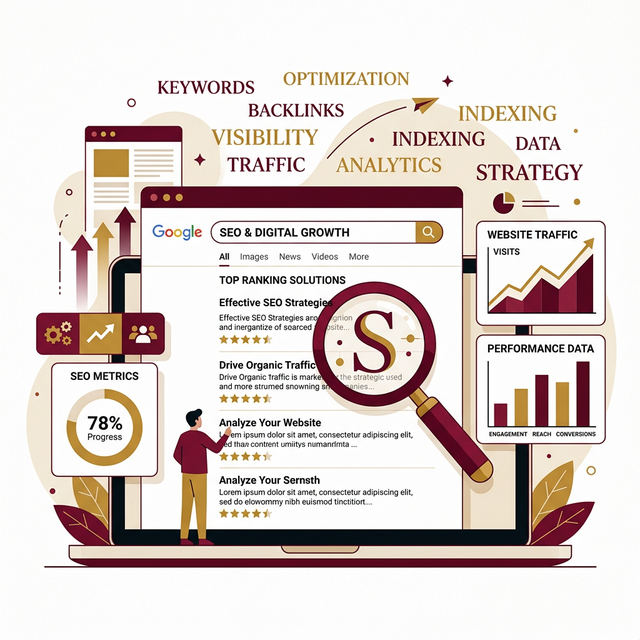
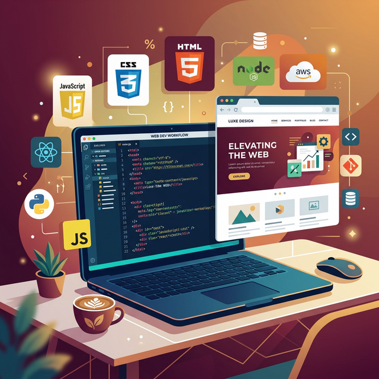

Cara Membangun Landing Page Modern dengan Bootstrap 5
Pelajari langkah demi langkah membangun landing page yang responsif, modern, dan SEO-friendly menggunakan Bootstrap 5.
Baca SelengkapnyaCatatan dan insight seputar web development, leadership, produktivitas, dan hal-hal yang saya pelajari.

Pelajari langkah demi langkah membangun landing page yang responsif, modern, dan SEO-friendly menggunakan Bootstrap 5.
Baca Selengkapnya
Bagaimana menerjemahkan desain Figma atau referensi visual menjadi kode HTML/CSS yang pixel-perfect dan konsisten.
Baca Selengkapnya
Memahami dasar-dasar SEO on-page: title tag, meta description, heading hierarchy, dan schema markup.
Baca SelengkapnyaRefleksi tentang kepemimpinan, teamwork, dan pelajaran hidup dari pengalaman memimpin organisasi sekolah.
Baca Selengkapnya
Cara mengatasi masalah overflow horizontal dan memastikan website tampil sempurna di semua ukuran layar.
Baca SelengkapnyaStrategi nyata yang saya gunakan untuk menyeimbangkan banyak tanggung jawab sekaligus tanpa burnout.
Baca Selengkapnya